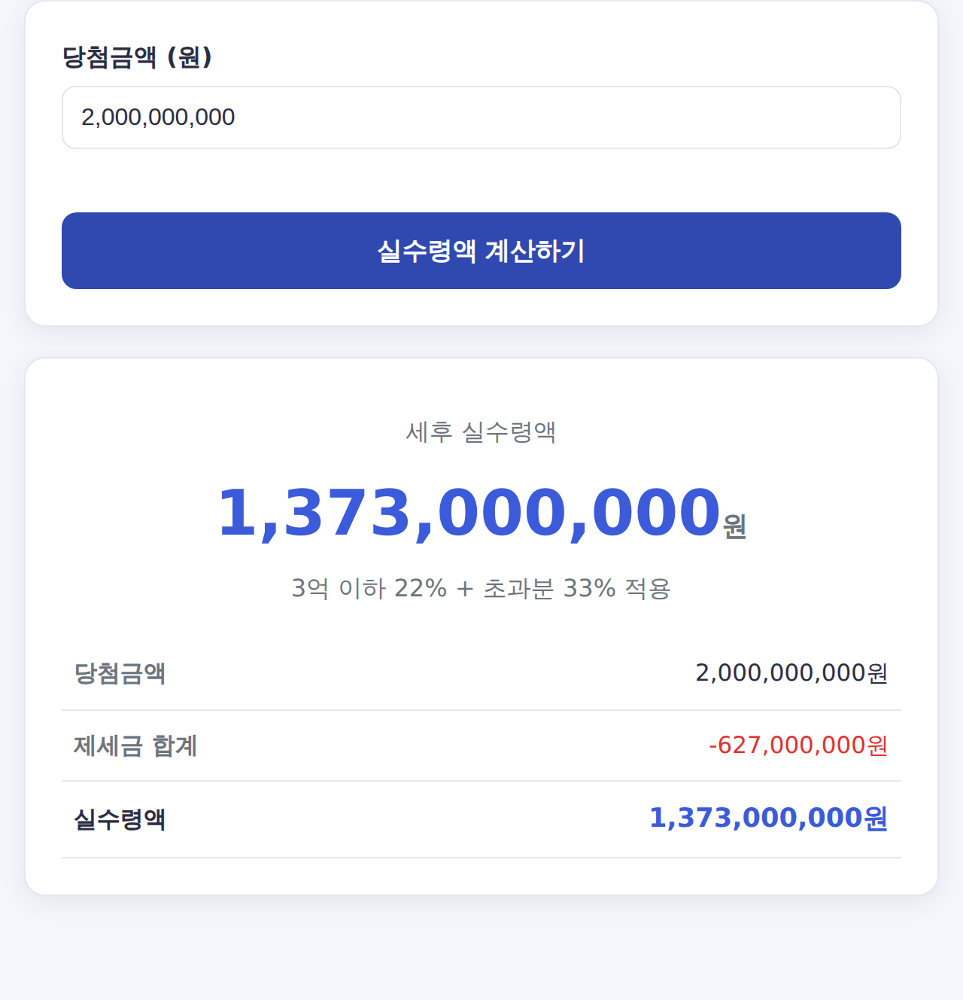

로또 당첨금 실수령액 — 세금 떼면 얼마? (22%·33% 계산법)
로또 1등에 당첨되면 광고처럼 그 금액을 다 받을까요? 아닙니다. 복권 당첨금에는 세금이 붙습니다. 당첨금별로 실제 손에 쥐는 금액을 정리했습니다.
⏱️ 로또 당첨금 실수령액 계산기에 당첨금을 넣으면 세후 실수령액이 바로 나옵니다.

복권 당첨금 세율
- 5만원 이하: 비과세 (세금 없음)
- 5만원 초과 ~ 3억원 이하: 22% (소득세 20% + 지방소득세 2%)
- 3억원 초과분: 33% (소득세 30% + 지방소득세 3%)
당첨금별 실수령액 표
| 당첨금 | 세금 | 실수령액 |
|---|---|---|
| 1억원 | 2,200만원 | 7,800만원 |
| 5억원 | 1억 3,200만원 | 3억 6,800만원 |
| 10억원 | 2억 9,700만원 | 7억 300만원 |
| 20억원 | 6억 2,700만원 | 13억 7,300만원 |
| 30억원 | 9억 5,700만원 | 20억 4,300만원 |
계산 예시 — 20억 당첨
- 3억원까지: 3억 × 22% = 6,600만원
- 초과 17억원: 17억 × 33% = 5억 6,100만원
- 세금 합계 약 6억 2,700만원 → 실수령 약 13억 7,300만원
자주 묻는 질문
Q. 당첨금을 나눠 받으면 세금이 줄어드나요?
복권 당첨금은 건별로 과세되며, 1매 당첨금 기준으로 세율이 정해집니다. 임의로 나눈다고 세금이 줄지는 않습니다.